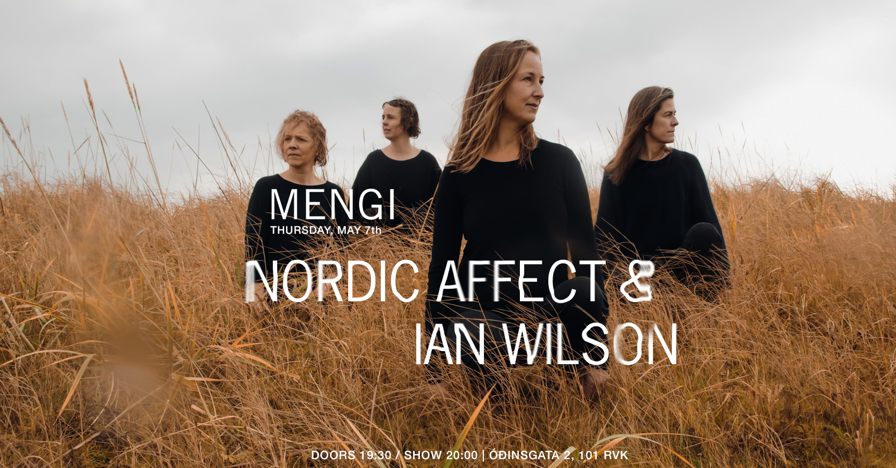
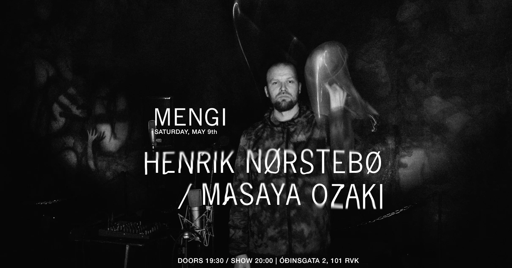
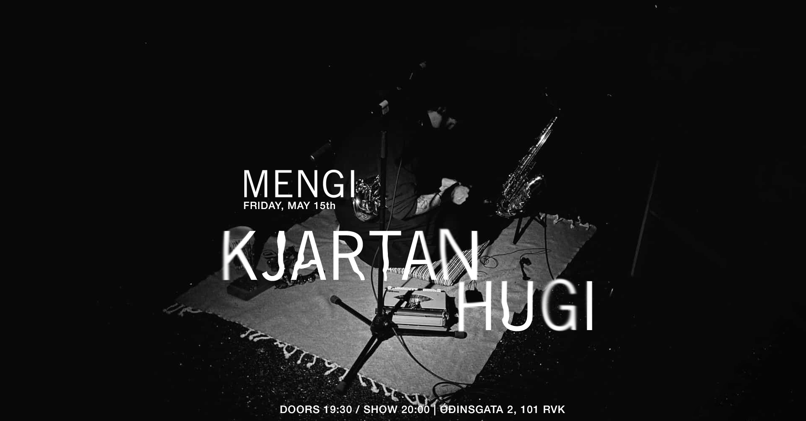
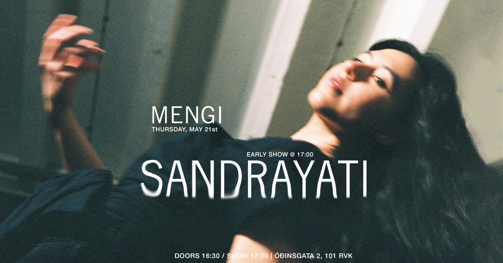
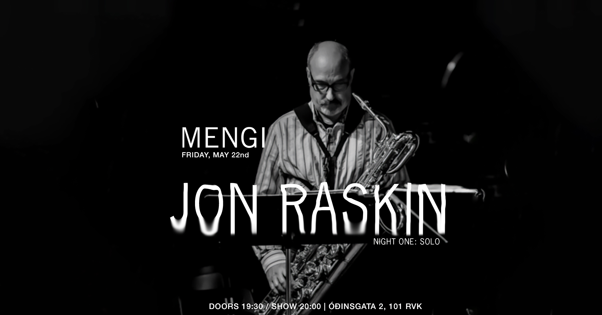
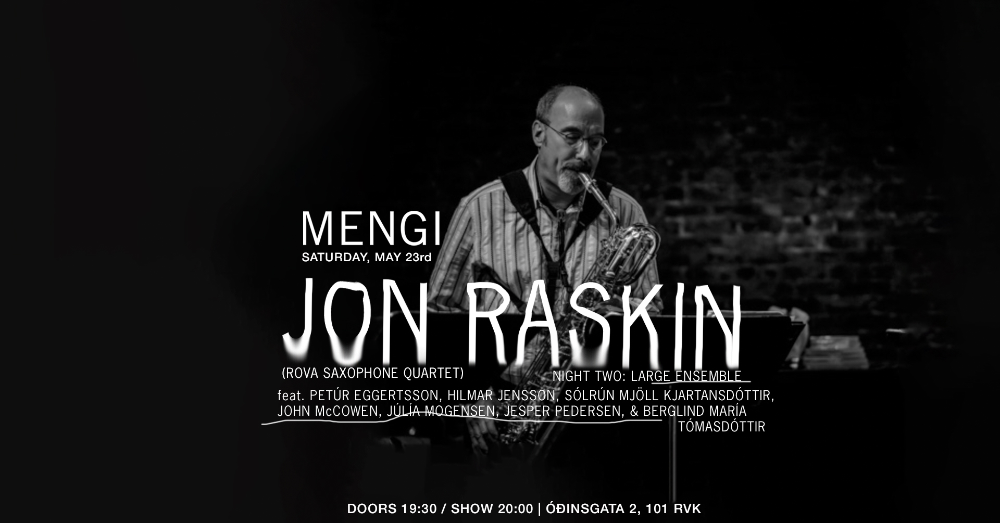
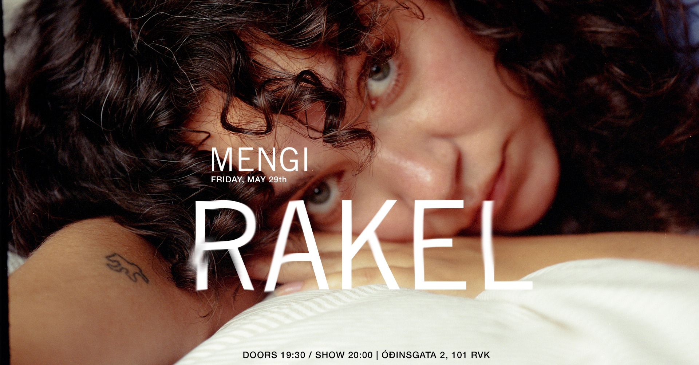

Upcoming Events

THU 07.05 Nordic Affect & Ian Wilson: UNAÐSGARÐUR
Tickets Thursday, May 7th NORDIC AFFECT & IAN WILSON: UNAÐSGARÐUR doors 19:30 / show 20:00 3000kr / 2500kr students / pay what u can Sumarið nálgast og við í Nordic Affect teljum í tónleika í Unaðsgarði þar sem næturgalar syngja, rósir blómstra og flugur suða. Verk eftir Handel, Boismortier, Scarlatti, Barsanti og félaga. Sérstakur gestur er blokkflautuleikarinn Ian Wilson frá Bretlandi. Smell of roses, nightingales and bees: join Nordic Affect for a sonic Garden of Delights! Music by Handel, Boismortier, Scarlatti a.o. Special guest is Ian Wilson from the UK. About the musicians: Nordic Affect hefur komið sér á kortið sem framsækinn tónlistarhópur. Gagnrýnendur innanlands og utan hafa hælt hópnum í hástert, m.a. fyrir ‘ineffable synergy between the performers’ (San Francisco Classical Voice), lýst honum sem ‘multi-disciplinary force of nature’. (A Closer Listen) og sem gersemi í íslensku tónlistarlífi (Fréttablaðið). Hópurinn er styrktur af Menningarsjóði Reykjavíkurborgar og Tónlistarsjóði. Nánari upplýsingar má finna á FB síðu hópsins og vefsíðu: www.nordicaffect.com Ian Wilson is the principal recorder professor at the Guildhall School of Music & Drama, the Head of Woodwind at Eton College and is the visiting recorder specialist at the North East of Scotland Music School in his hometown of Aberdeen. He performs regularly with The Sixteen, English National Opera, Arcangelo, The Gabrieli Consort and the Early Opera Company and has in recent years, performed with orchestras across the world including The Budapest Festival Orchestra, The Armenian State Symphony Orchestra, The Korean Symphony Orchestra, The BBC Philharmonic Orchestra, Helsinki Baroque Orchestra and The Irish Baroque Orchestra. He is a founding member of the recorder quartet The Flautadors, with whom he has recorded five highly acclaimed albums. As a chamber musician and soloist, Ian has performed in many European festivals including the Auvergne, East Cork and Innsbruck Early Music Festivals, the Edinburgh Festival, Skálholt Festival in Iceland, Oxford Lieder Festival and the BBC Proms. Outside classical music, Ian can be heard on albums by Paris Motel and singer-songwriter Vashti Bunyan.

SAT 09.05 Henrik Nørstebø / Masaya Ozaki
Tickets Saturday, May 9th HENRIK NØRSTEBØ / MASAYA OZAKI doors 19:30 / show 20:00 2500kr / 2000kr students / pay what u can Henrik Munkeby Nørstebø is a Norwegian trombonist and sound artist based in Berlin and Trondheim; an active live performer also working with a wide range of compositional and cross disciplinary projects. His current solo setup consists of heavily amplified trombone, analogue electronics and sound files, and undulates between claustrophobic tension and moments of ecstatic release. Breath is at the core of the project, and Nørstebø is utilizing an air compressor-like use of lungs, nuanced microphone technique and gain adjustments in order to unearth the intense physicality of the inherent low volume sound material.“DYSTOPIAN DANCING” from 2022, his third solo release, showcases this unprocessed material along with an expanded section for “object orchestra”. Nørstebø has toured extensively since 2010, and released numerous records, spanning from solo to large groups. His collaborative projects include duos with Audrey Chen (BEAM SPLITTER), Daniel Lercher and JD Zazie, new music ensemble Aksiom and a myriad of collaborations with improvisers, visual artists, dancers, entities from around the world. Together with Audrey Chen, he has organized "Dedicated play" since 2020, lastly BEAM SPLITTER x Xiu Xiu : Dedicated play festival in Berlin and London December 2025, featuring a star studded line-up. “A heightened consciousness around a kind of beat based on variations in mouth morphology, pressure, and capacity ties time to the body, ups the stakes, and feedbacks into its violent undertones. A wide rhythmic palette provides much material for its reworking, which adds eerie noir and air raid sirens, glassy sines, and the ubiquitous clicking of an object orchestra, and the rhythmic raspberries blend with bumps that could come from programming as much as the mouth for a kind of breath-based dub techno.” – Keith Prosk, Harmonic series ----- Masaya Ozaki is a New York/Iceland-based composer/performer born in Niigata, Japan. His work is influenced by the transient nature of space. Ozaki approaches sound not just as a medium, but as a relational form intertwined with space, environment, and material. He explores extensively in site-specific projects like "Echoes," which involved live performances inside a lighthouse. Ozaki’s latest album, Mizukara (2024), is a reflection of his personal and artistic journey, primarily shaped by his experiences in Iceland. The album embraces minimalism and introspection, incorporating field recordings and the textures of the Icelandic landscape to explore the fluid relationship between self and environment. His relocation to Iceland has profoundly influenced his work, encouraging him to further merge the boundaries between music, nature, and architecture. An original member of the Spidernetwork collective, he co-curates experimental and noise music festivals in Iceland and founded Punch in the Mouth from the Inside, a concert series at Mengi featuring female and transgender artists. Working on the ongoing collaboration "dwelling" with Lilja María Ásmundsdóttir. Internationally, he is part of the Wandelweiser composer collective and recently contributed field recordings to Toshio Hosokawa’s opera Natasha (2025). Masaya Ozaki holds a B.Mus degree in film scoring from Berklee College of Music and an M.Mus degree in composition from Iceland University of the Arts in Reykjavík, Iceland. He is also a member of the Reykjavík-based emo anime doom metal band MC Myasnoi.

FRI 15.05 Kjartan Hugi
Tickets Friday, May 15th KJARTAN HUGI: SOLO doors 19:30 / show 20:00 2500kr / 2000kr students / pay what u can Kjartan Hugi Plays a mostly improvised set on a couple of woodwind instruments and percussion. The set will go in hand with his upcoming solo project which will be his first of the kind. The album is inspired by world music from all over and other solo albums by legendary saxophone players like Peter Brötzmann and Anthony Braxton. On the album Kjartan explores multiple different ideas like; repetition, abrupt changes in dynamics, drones, sound effects on woodwinds and many more. ----- Kjartan Hugi leikur spuna á tréblásturshljóðfæri og slagverk. Settið tengist væntanlegri sóloplötu hans, sem verður hans fyrsta sinnar tegundar. Platan er innblásin af heimstónlist og öðrum sólóplötum eftir saxófónleikarana Peter Brötzmann, Anthony Braxton og fleiri. Á plötunni kannar Kjartan margar ólíkar hugmyndir, svo sem endurtekningar, snöggar breytingar í styrkleika, dróna, óhefðbundin hljóð á tréblásturshljóðfæri og margt fleira.

THU 21.05 Sandrayati
Tickets Thursday, May 21st SANDRAYATI doors 16:30 / show 17:00 2500kr / 2000kr students / pay what u can FAMILY FRIENDLY CONCERT! Sandrayati is a singer-songwriter whose music moves between folk, ambient, alt rock, and the spaces between breath. Born into the traditions of Java and Bali and now rooted in Reykjavík, she weaves identity, nature and the body into song — music that asks us to come home to ourselves. Her second album INHABIT(2025) is an intimate look at phases both human and in nature. Sandrayati has teamed up with movement facilitators all over the world to provide workshops that allow listeners to explore both emotional and movement responses set to the instrumental album, a daughter of INHABIT, called “Inhabiting Bodies”, continuing on in 2026 . A family friendly afternoon performance, Sandrayati will be showcasing a more improvised ambient set with songs woven in. 5pm start.

FRI 22.05 Jon Raskin: Snapshots, 11 Works for Solo Alto
Tickets Snap Shots: 11 works for Solo Alto composed or arranged by Jon Raskin, Steve Lacy, John Coltrane, Elmo Hope, Thelonious Monk, Ornette Coleman, and Eric Dolphy Jon Raskin plays Alto in the San Fransisco based Saxophone Quartet ROVA, a group that has been active for nearly 50 years. For his first time playing in Reykjavik, he will perform a solo set followed by a an ensemble the following evening. Jon’s early career includes his participation in new music ensembles directed by John Adams (San Francisco Conservatory of Music) and Dr. Barney Childs (University of Redlands). Before ROVA, Raskin served as music director of the Tumbleweed Dance Company (1974-77), and was a founding member of the Blue Dolphin Alternative Music Space. He participated in the creation of “The Farm”- an art project that included a city farm, community garden, Ecology Center, Dance and Theater companies, and resulted in the creation of a city park. Highlights as a member of ROVA include composing a collaborative work for SF Taiko Dojo/Rova, working with Howard Martin on the installation work “Occupancy”, composing music for Mr. Bungle/ Rova, organizing the 30 year Anniversary Concert of John Coltrane's Ascension, performing the music of Miles Davis at the Fillmore with Yo Miles!, the Glass Head Project with Inkboat and the ongoing Electric Ascension Project. Raskin has received numerous grants and commissions to work on a variety of creative projects: NEA composer grant for Poison Hotel, a theater production by Soon 3 (1988); Reader's Digest/Meet the Composer (1992 & 2000); Berkeley Symphony commission (1995) and Headland Center for the Arts Residency 2009. Besides over 40 recordings with ROVA, Raskin's recording experience include Anthony Braxton, Eight (+3) Tristano Compositions 1989 For Warne Marsh (1989) and The Bass & the Bird Pond with Tim Berne (1996), Wavelength Infinity- A Sun Ra Tribute, Between Spaces with Phillip Gelb, Dana Reason & Pauline Oliveros, Terry Riley's In C 25th Anniversary, and solo work on the Art Ship Series. His current albums include Let's Go Juke Box Suite (Not Two) with the Rova Saxophone Quartet, JR Quartet (Rastascan) with Liz Allbee, George Cremaschi and Gino Robair, Music + One (Rastascan) a Improvisation compendium for improvisers to play along with and Kaolithic Music, Jaw Harp Music recorded in a 587 Gallon Vase (Evander Music) “Open Box” on the Tzadik label, Music and reading performances by: Liz Albee, Carla Harryman, Aurora Josephson, Ava Mendoza, Jon Raskin, Gino Robair, Roham Shikhaini, and John Shiurba. FPR trio with Frank Gratkowski, Phillip Greenlief and Jon Raskin. In addition to all this, he has composed scores for local filmmaker Lee Lynch over the last 25 years. Lynch’s first film that featured his score is the Bee Hive, 2000, which premiered at Rotterdam film festival. This was followed by the soundtrack for his second feature, The Murder of Hi Good, (Lost Lanes Publishing), with his most recent score being for the Edda nominated short Konni, (co-directed by Thorbjorg Jonsdottir). photo by Peter Gannushkin (downtownmusic.net)

SAT 23.05 Jon Raskin: Large Ensemble
Tickets Saturday, May 23rd JON RASKIN: LARGE ENSEMBLE feat. PETÚR EGGERTSSON, HILMAR JENSSON, SÓLRÚN MJÖLL KJARTANSDOTTIR, JOHN McCOWEN, JÚLÍA MOGENSEN, JESPER PEDERSEN, & BERGLIND MARÍA TÓMASDÓTTIR doors 19:30 / show 20:00 3000kr / 2500kr students / pay what u can more info tba large ensemble plays a composition by founding member of ROVA Saxophone Quartet, Jon Raskin.

FRI 29.05 RAKEL
Tickets Friday, May 29th RAKEL doors 19:30 / show 20:00 2500kr / 2000kr students / pay what u can Rakel Sigurðardóttir hefur verið partur af íslensku tónlistarsenunni í þónokkur ár. Tónlist hennar hefur reglulega ratað á vinsældarlista hér á landi, hún komið fram og ferðast um heiminn með fjölmörgum þjóðþekktum tónlistarmönnum og hljómsveitum. Árið 2025 gerði hún plötusamning við útgáfufyrirtæki Ólafs Arnalds, OPIA Community og gaf út plötuna ‘a place to be’. Platan hefur hlotið mikið lof bæði á Íslandi sem og erlendis, en platan hlaut t.a.m. Kraumsverðlaunin 2025 og tilnefningu sem plata ársins á Íslensku tónlistarverðlaununum í ár. Rakel hlaut einnig verðlaun sem flytjandi ársins á Íslensku tónlistarverðlaununum. --EN-- RAKEL is an Icelandic artist working in song, memory, and atmosphere. Her music folds together voice, field recordings, and emotion into layered compositions that feel both intimate and expansive. Since her debut EP Nothing Ever Changes (2021), she has become a quietly singular presence in the Icelandic music landscape. Her debut album a place to be (released October 2025 via OPIA Community) marked a defining moment in her work. Co-created with Danish producer and longtime collaborator Sara Flindt, the album is part diary, part landscape, shaped by the acoustics of real places: her family’s farm in Hrútafjörður, Sara’s Copenhagen dorm room, and a studios of friends around Iceland and Denmark. Birds, clocks, breath, strings, soft synths, the creak of a floorboard, nothing is too small to become part of the composition. The album was met with wide critical acclaim, earning nominations for Album of the Year and Song of the Year, and establishing RAKEL as one of the most compelling new voices in Icelandic music. In 2026, she was awarded Performer of the Year, further cementing her reputation as a captivating live artist.